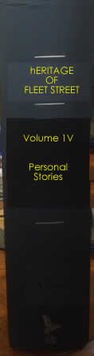

nal stories from Fleet Street
The Heritage of Fleet Street

The Heritage
of Fleet Street We were there! - Vol. IV: Personal stories
Personal stories from Fleet Street
This new section of our website is for the ersonal stories of those who worked in Fleet Street during the 'hot metal' era before
computerised typesettingtook over, and the newspapers moved away from their traditional homes in and around Fleet Street
into bildings elsewhere which were more suitable for the new technology
We hope that these stories will give you a flavour of what Fleet Street was actually like, with its very crowded pavements,
its roads jammed with traffic including large lorries loaded with very large rolls of newsprint, and small vans painted with newspaper slogans
dashing off to railway stations with copies of newspapers for national distribution.